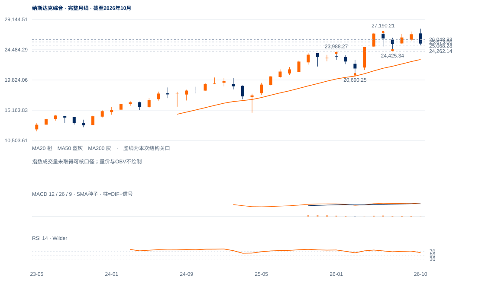

反抽待验
未来1—5日偏向旧供应带下方反复，25068守位与25740附近回收质量是近期重点。
未来1—5日偏向旧供应带下方反复，25068守位与25740附近回收质量是近期重点。
未来2—6周以24262—26053区间修复为主，先检验25068及25740附近。原26048.83连续两日条件通过后，再评估更高旧峰；未过缺口前仍偏向反复。
未来1—3个月属于长期上行中的中级调整，24262守住并形成较高周谷才支持恢复。连续两周收低24262，22982中期月均衡成为下一参照；周收回到27190上方才能明显修复年中高区的供给压力。

展开图表 ↗2022低10088.83、2025年4月14784.03、今年3月20690.25的大谷仍抬升；10月月收25437高于10/20月均衡24984.21/22982.09。但6月27190.21至10月27722.75新高后，11月迅速打到24262.14，已经跌穿7月24425.34低点，反映更大级别的中期调整。
10月新高后的下破形成周线损伤，当前25366.09重新回到10月均衡上方，却仍未收回25673—26053旧下缺口。11月11日上窗口被12日盘中完全回补后又收回上沿，说明短线承接存在，供应区也仍在。未完成本周反弹不计作周线反转。
10月新高后跌破年中谷，当前仍处破谷后的回收阶段。新上窗口已盘中回补，25673—26053旧下缺口是上层供应。
11日上缺口25286.83—25326.69，12日低25068.28已穿过下沿，完成盘中回补；收25366.09又回到缺口上沿之上。回补与收盘失守是不同事件。
现价仅高于200日线25130.16约0.44ATR，低于20日25740.01。前低24262.14仍在，短线能反抽，但尚无较高低点后再破前高的完整向上结构。
10月30日下缺口25673.00—26053.16未被完全填补，11月4日26048.83中峰位于其上部；这是修复质量比单次RSI回升更重要的检验。
先保持25740附近，再连续两日收过原26048.83；保留原过滤，不把盘中触及算确认。
日收低于25068.28削弱最新回收；原24262.14日收失守撤销守底解释。
200日均线已被收盘回收，最新上窗口回补后没有持续低收；若26053迅速被夺回，弱势修复可能转成更强的重心抬升。
| 周期 | 最后完整柱 | 图示柱数 | RSI14 | ATR14 | MACD柱 |
|---|---|---|---|---|---|
| 日线 | 2026-11-12 | 185 | 44.59748 | 535.59076 | -26.2193 |
| 周线 | 2026-11-06 | 156 | 41.34854 | 993.30928 | -290.15767 |
| 月线 | 2026-10-30 | 96 | 63.00511 | 1790.23643 | 67.141 |
美股价格拆股调整、不含分红再投资。完整周线至11月6日；11月进行中。指数成交量与全成分广度受限。